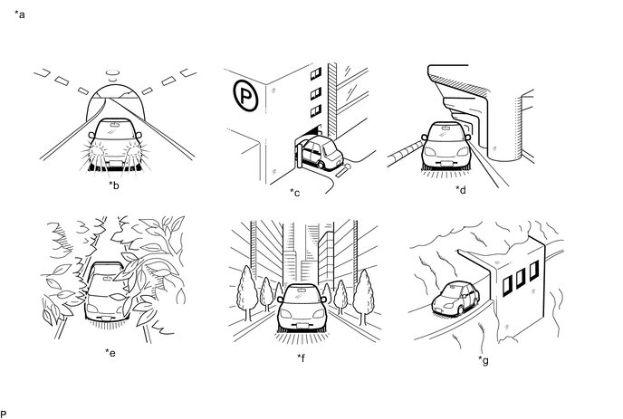
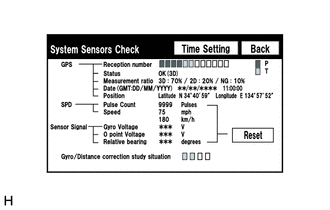

NAVIGATION SYSTEM(for Navigation Receiver Type) GPS Mark is not Displayed
PROCEDURE
-
CHECK CABIN
-
Check the cabin for any object that might interrupt radio reception or additional devices which use radio waves on the instrument panel. If such an object exists, remove it and check if the GPS mark reappears.
Tech Tips
The GPS uses extremely faint radio waves originating from satellites. If the signal is interrupted by obstructions or other radio waves, the GPS may not be able to properly receive the signal.
OK The GPS mark appears. Result Proceed to OK NG
OK 
END
NG 
-
-
CHECK SURROUNDINGS
-
Check if the vehicle is in a location where GPS signal reception is poor. If the vehicle is in such a place, relocate the vehicle and check if the GPS mark reappears.
Tech Tips
The GPS uses 24 satellites in 6 orbits. At any point in time, 4 satellites should be able to pinpoint your vehicle. However, GPS signals may not reach the vehicle due to influence from the surroundings, vehicle direction and time. For examples, see the following illustration.

*a Example *b In a tunnel *c In a building *d Under an overpass *e On a forest or tree-lined path *f Between tall buildings *g Under a cliff or overhang - - OK The GPS mark is displayed. Result Proceed to OK NG
OK
END (SYSTEM RETURNED TO NORMAL)
NG
-
-
CHECK SYSTEM SENSORS (OPERATION CHECK)
-

Enter the "System Sensors Check" screen. Refer to Check System Sensors in Operation Check.
-
Check how many of the following codes appear in the "Reception number".
Tech Tips
T or P appears.
OK At least 3 codes appear. Result Proceed to OK NG
OK
REPLACE NAVIGATION RECEIVER ASSEMBLY Click here
NG
PROCEED TO NEXT SUSPECTED AREA SHOWN IN PROBLEM SYMPTOMS TABLE Click here
-